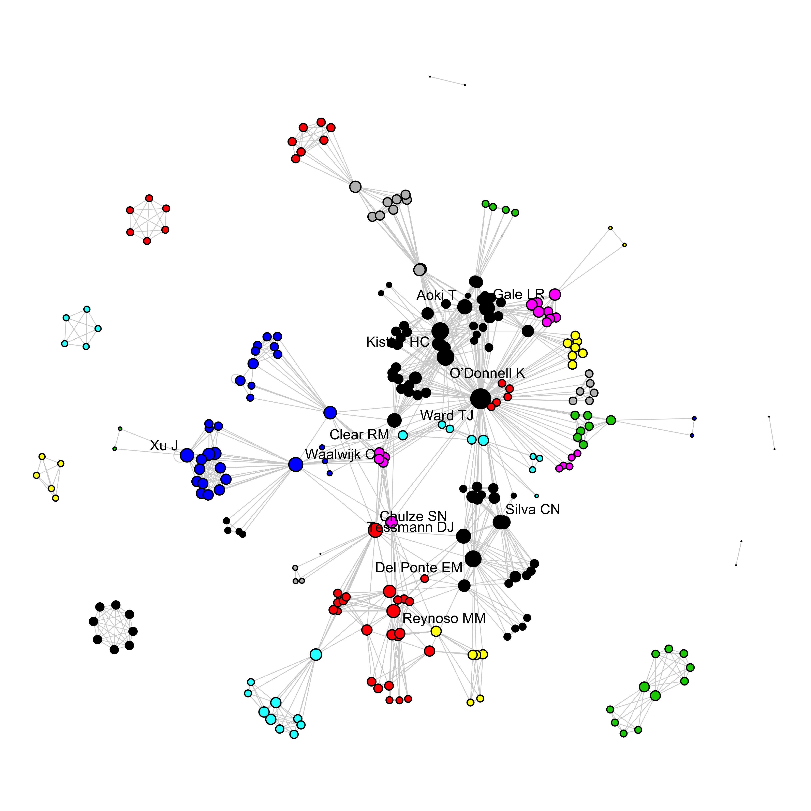
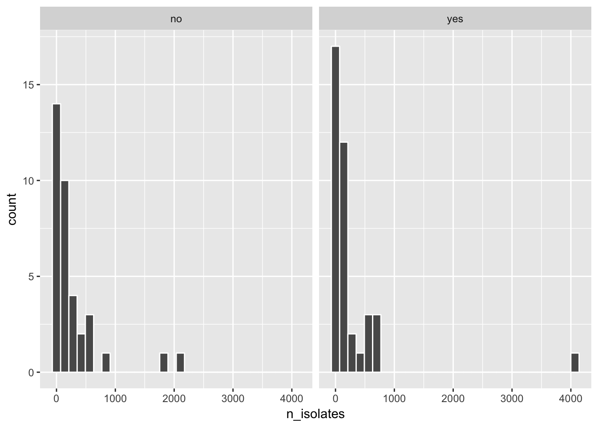
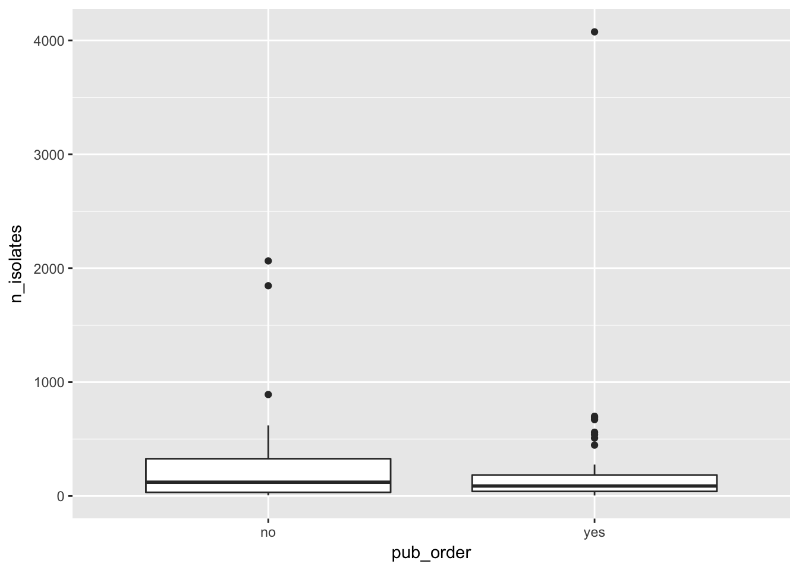
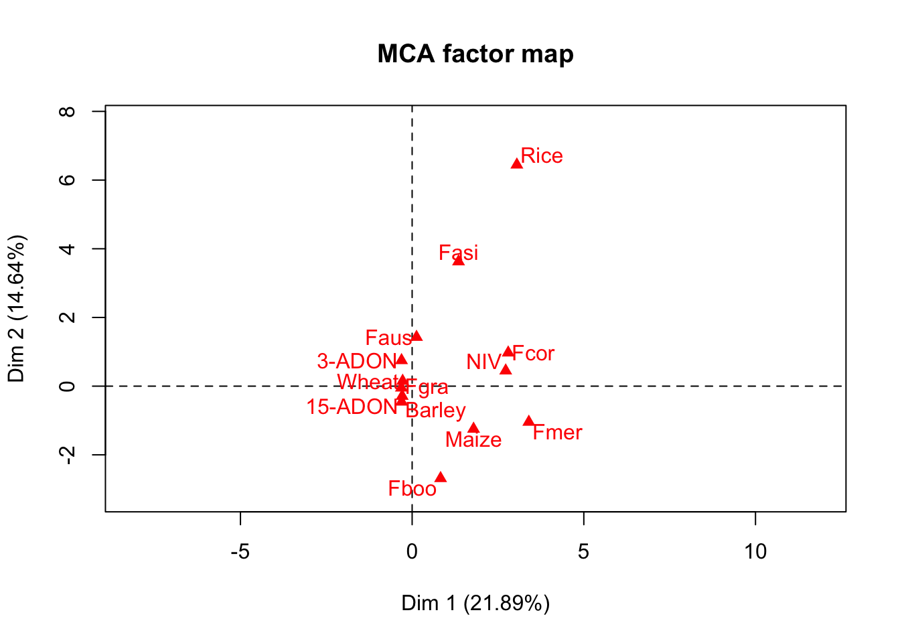
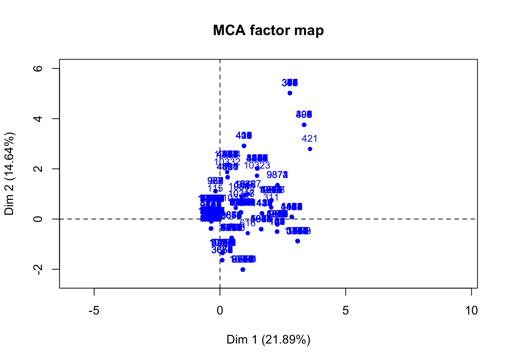
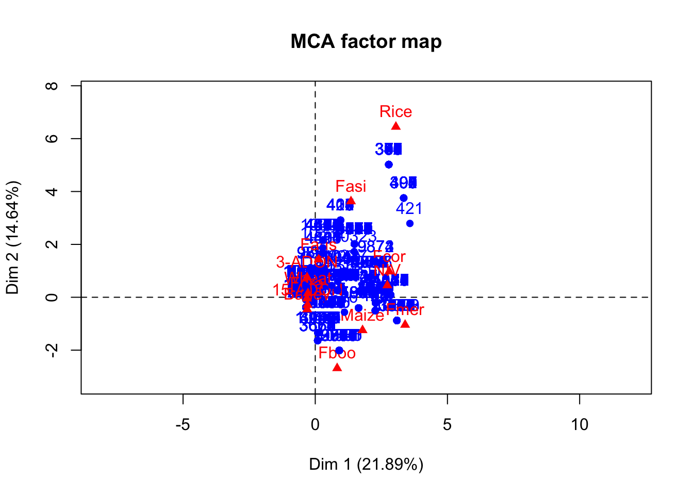
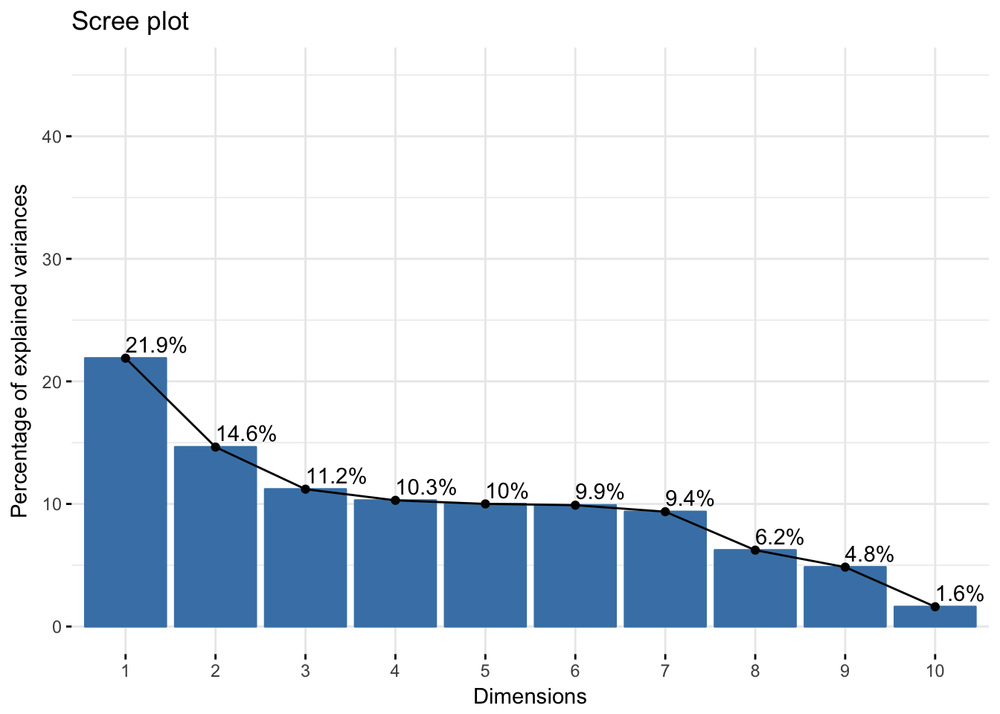
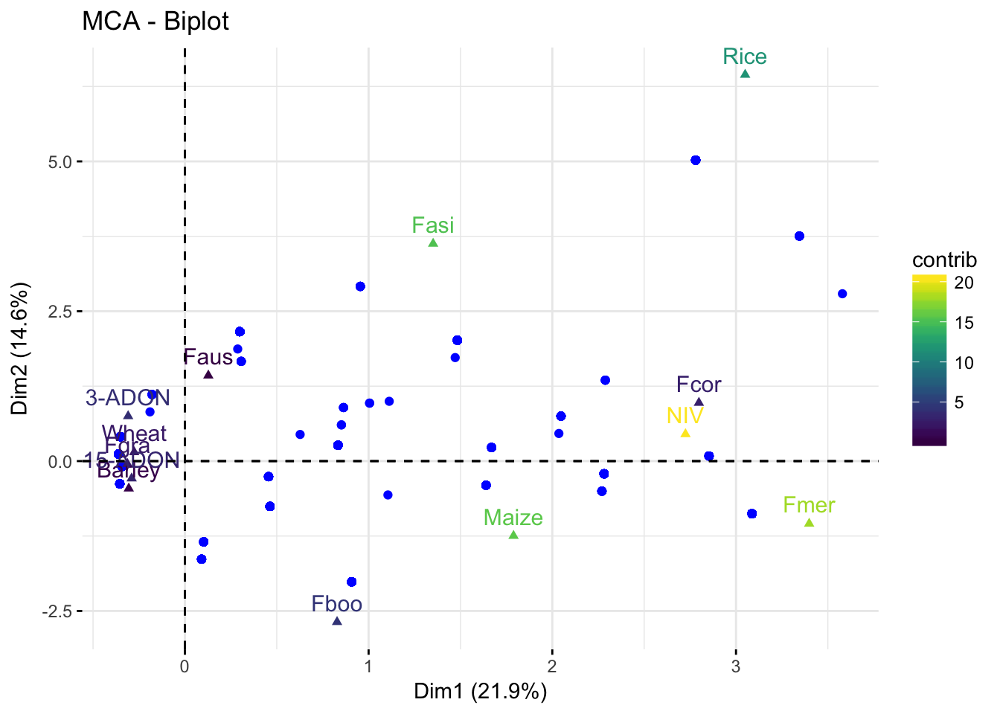

Bibliographic analysis
Bibliographic data were obtained from peer-reviewed articles (n = 75) which were indexed as a bibliographic source for the information on the FGSC isolates in our database. The indexed articles were published from 2000 to 2017. Follows a summary for these data.
Articles per year
The number of articles published per year ranged from 1 to 12. The year with most number of articles was 2011
articles %>%
ggplot(aes(year)) +
geom_bar(aes(fill = factor(pub_order))) +
scale_y_continuous(breaks = seq(0, 11, 1), expand = c(0.02, 0)) +
scale_x_continuous(breaks = seq(2000, 2017)) +
labs(y = "Number of articles", x = "Published year", title = "Articles per year")
Journals
The articles were published in 30 scientific journals. The journal with most number of publications was Fungal Genetics and Biology with 9 articles, followed by Plant Pathology (9 articles) and Plant Disease (7 articles).
articles %>%
ggplot(aes(reorder(journal_name, journal_name, function(x) length(x)))) +
geom_bar(aes(fill = factor(pub_order))) +
scale_y_continuous(breaks = seq(0, 10), expand = c(0.01, 0)) +
coord_flip() +
labs(y = "Number of articles", x = "", title = "Articles per journal")
Authorship
Country affiliations
For each article, the countries reported in the affiliations of the authors were indexed. We recorded the country name only once per article regardless of the number of authors from a same country. There were 27 unique countries, and the three most unique occurrences were United States, China and Argentina.
articles %>%
gather(code, country, 25:30) %>%
filter(country != "NA") %>%
ggplot(aes(reorder(country, country, function(x) length(x)))) +
geom_bar(aes(fill = factor(pub_order))) +
scale_y_continuous(breaks = seq(0, 30, 2), expand = c(0.01, 0)) +
coord_flip() +
labs(y = "Number of articles", x = "", title = "Articles per country")
Number of authors
authors <- articles %>%
gather(author, name, 6:19) %>%
select(author, name) %>%
filter(name != "NA") %>%
group_by(name) %>%
tally(sort = T)There were 313 unique authors in the collection of 75 indexed articles. Let’s see the list of 20 most prolific authors and a frequency plot for authors who have published at least three articles.
head(authors, 20)## # A tibble: 20 x 2
## name n
## <chr> <int>
## 1 Ward TJ 24
## 2 Del Ponte EM 10
## 3 Kistler HC 10
## 4 O’Donnell K 10
## 5 Chulze SN 6
## 6 Gale LR 6
## 7 Aoki T 5
## 8 Reynoso MM 5
## 9 Tessmann DJ 5
## 10 Waalwijk C 5
## 11 Gomes LB 4
## 12 Ramirez ML 4
## 13 Silva CN 4
## 14 Xu J 4
## 15 Astolfi P 3
## 16 Boutigny A-L 3
## 17 Clear RM 3
## 18 Geiser DM 3
## 19 Gilbert J 3
## 20 Lee T 3authors %>%
filter(n > 2) %>%
ggplot(aes(reorder(name, n), n)) +
geom_col() +
scale_y_continuous(breaks = seq(0, 30, 3), expand = c(0.01, 0)) +
coord_flip() +
labs(x = "", y = "Frequency", title = "Articles per author")
Wordcloud
A word-cloud is an alternative way to visualize the frequency of articles for all authors. The size of the name is relative to the number of articles.
Scholarly collaborative network
A network analysis was conducted to identify the connections among the authors and the scientific communities. For such, we need to build an edge list, or all pairs of occurrences of two authors in a same publication. Let’s see first 10 pairs or authors. The whole list has almost one thousand pairs.
library(purrr)
library(purrrlyr)
authors_net <- articles %>% select(6:19)
author_list <- flatten(by_row(authors_net, ..f = function(x) flatten_chr(x), .labels = FALSE))
author_list <- lapply(author_list, function(x) x[!is.na(x)])
# create the edge list
author_edge_list <- t(do.call(cbind, lapply(author_list[sapply(author_list, length) >= 2], combn, 2)))
author_edge_list[1:10, ]## [,1] [,2]
## [1,] "O’Donnell K" "Kistler HC"
## [2,] "O’Donnell K" "Tacke BK"
## [3,] "O’Donnell K" "Casper HH"
## [4,] "Kistler HC" "Tacke BK"
## [5,] "Kistler HC" "Casper HH"
## [6,] "Tacke BK" "Casper HH"
## [7,] "O’Donnell K" "Ward TJ"
## [8,] "O’Donnell K" "Geiser DM"
## [9,] "O’Donnell K" "Kistler HC"
## [10,] "O’Donnell K" "Aoki T"Within an authorship network, co-authors (co-occurrence in an article) are linked together. Authors from this group can be connected to authors from another publication whenever they are co-authors in another article. Therefore, two articles can be linked by a common author. Each author is then considered a node in the network and the connections between them are the edges. There are several statistics to calculate in a network analysis.
For now, let’s visualize the authorship network and the community structure which was defined via a function that tries to find densely connected sub-graphs, also called communities, via random walk algorithm. The idea is that short random walks tend to stay in the same community. In the network below, there are 26 communities or sub-graphs which are represented by distinct colors.
# igraph
library(igraph)
net <- graph.edgelist(as.matrix(author_edge_list), directed = FALSE)
degree <- data.frame(degree(net))
# summary(degree$degree.net.)
between <- data.frame(round(betweenness(net), 1))
page <- data.frame(page_rank(net)$vector)
close <- data.frame(round(closeness(net), 10))
eigen <- data.frame(round(evcent(net)$vector, 5))Network graph
library(network)
library(intergraph)
# Clusters
wc <- cluster_walktrap(net)
# Modularity
mod <- modularity(wc)
ms <- membership(wc)
net_stat <- asNetwork(net)
png("network1.png", res = 600, width = 4000, height = 4000, units = "px")
set.seed(1003)
par(mar = c(0, 0, 0, 0))
plot.network(net_stat, vertex.cex = 0.05 + 0.25 * log(graph.strength(net)), label = ifelse(degree(net) > 24, V(net)$name, NA), label.bg = "NA", label.col = "black", edge.col = "lightgray", edge.lty = 0.5, label.cex = 0.7, displaylabels = TRUE, vertex.col = membership(wc), jitter = T, edge.len = 0.2, boxed.labels = T, label.border = "NA", pad = 1.2)
dev.off()## quartz_off_screen
## 2
Interactive network graph
An interactive graph allows to navigate and visualize the connection among the authors. We use a function of the networkD3 package to build the plot.
Network statistics
There are several statistics to compute at the network, node and edge level.
library(broom)
# Transitivity
trans <- transitivity(net, type = "global")
# Degree
deg <- degree(net)
deg <- tidy(deg)
deg2 <- deg %>%
group_by(names) %>%
arrange(desc(x)) %>%
head(20)
# Betweenness
bet <- betweenness(net, normalized = TRUE, directed = FALSE)
bet <- tidy(bet)
bet2 <- bet %>%
group_by(names) %>%
arrange(desc(x)) %>%
head(20)
# Eigenvector centrality
eigen <- eigen_centrality(net)
eigen1 <- tidy(eigen$vector)
eigen2 <- eigen1 %>%
group_by(names) %>%
arrange(desc(x)) %>%
head(20)
# Page rank centrality
rank <- page.rank(net)
rank1 <- tidy(rank$vector)
rank2 <- rank1 %>%
group_by(names) %>%
arrange(desc(x)) %>%
head(20)
# Closeness centrality
close <- closeness(net)
close1 <- tidy(close)
close2 <- close1 %>%
group_by(names) %>%
arrange(desc(x)) %>%
head(20)
# Clusters
wc <- cluster_walktrap(net)
# Modularity
mod <- modularity(wc)
ms <- membership(wc)
# clustering edge betweenness
eb <- cluster_edge_betweenness(net)Network transitivity
Transitivity, also know as clustering coefficient, is the mean probability that two author with a common author are themselves co-authors. In our study the transitivity was 0.454745, meaning that, on average, the chance that two scholars that share a common collaborator wrote a paper together is almost 50%.
Node degree
Individually, authors can be highly connected or influential. The degree of a node is a basic structural property that quantify the number of adjacent nodes or edges. Let’s see the 25 authors with most degree.
deg2## # A tibble: 20 x 2
## # Groups: names [20]
## names x
## <chr> <dbl>
## 1 Ward TJ 155
## 2 O’Donnell K 65
## 3 Kistler HC 63
## 4 Del Ponte EM 53
## 5 Waalwijk C 42
## 6 Gale LR 40
## 7 Aoki T 34
## 8 Chulze SN 34
## 9 Tessmann DJ 32
## 10 Clear RM 28
## 11 Xu J 28
## 12 Reynoso MM 26
## 13 Silva CN 26
## 14 Gomes LB 23
## 15 Geiser DM 22
## 16 Lee T 22
## 17 Ramirez ML 21
## 18 Gilbert J 21
## 19 Zhang H 19
## 20 Feng J 19Betweenness
Betweenness is a centrality measure based on the shortest paths. The betweenness centrality for each vertex is the number of these shortest paths that pass through the vertex. It represents the degree of which nodes stand between each other.
bet2## # A tibble: 20 x 2
## # Groups: names [20]
## names x
## <chr> <dbl>
## 1 Ward TJ 0.46444840
## 2 Waalwijk C 0.14515624
## 3 Chulze SN 0.10929691
## 4 Del Ponte EM 0.06886068
## 5 Qu B 0.06035122
## 6 Proctor RH 0.05665286
## 7 Lee T 0.05089043
## 8 Nicholson P 0.04843763
## 9 Carter J 0.04843763
## 10 Leslie JF 0.04586116
## 11 Obanor F 0.03592629
## 12 Balmas V 0.03091764
## 13 Cowger C 0.02077665
## 14 O’Donnell K 0.01933610
## 15 Kistler HC 0.01726926
## 16 Gilbert J 0.01577634
## 17 Lamprecht SC 0.01564432
## 18 Clear RM 0.01489494
## 19 Reynoso MM 0.01376417
## 20 Xu J 0.01069338Page rank
This is the Google Page Rank for the specified vertices.
rank2## # A tibble: 20 x 2
## # Groups: names [20]
## names x
## <chr> <dbl>
## 1 Ward TJ 0.039368199
## 2 O’Donnell K 0.015978973
## 3 Kistler HC 0.015082257
## 4 Del Ponte EM 0.012780863
## 5 Waalwijk C 0.011485610
## 6 Chulze SN 0.009507381
## 7 Gale LR 0.009488601
## 8 Aoki T 0.008020326
## 9 Xu J 0.007559847
## 10 Tessmann DJ 0.007410570
## 11 Li W 0.007213149
## 12 Clear RM 0.007062686
## 13 Reynoso MM 0.006973799
## 14 Lee T 0.006748515
## 15 Silva CN 0.006027441
## 16 Gilbert J 0.005898407
## 17 Proctor RH 0.005715540
## 18 Ramirez ML 0.005638330
## 19 Gomes LB 0.005469690
## 20 Wang X 0.005394739Eigenvector
This is a measure of the influence of a node (author) in a network. It assigns relative scores to all nodes in the network based on the concept that connections to high-scoring nodes contribute more to the score of the node in question than equal connections to low-scoring nodes.
eigen2## # A tibble: 20 x 2
## # Groups: names [20]
## names x
## <chr> <dbl>
## 1 Ward TJ 1.0000000
## 2 Kistler HC 0.7336540
## 3 O’Donnell K 0.7297043
## 4 Aoki T 0.4817978
## 5 Gale LR 0.4516409
## 6 Geiser DM 0.3120499
## 7 Del Ponte EM 0.3061535
## 8 Clear RM 0.2412272
## 9 Starkey DE 0.2237164
## 10 Gilbert J 0.1960101
## 11 Tessmann DJ 0.1915728
## 12 Broz K 0.1898425
## 13 Silva CN 0.1760557
## 14 Nicolli CP 0.1648052
## 15 Gomes LB 0.1626336
## 16 Suga H 0.1605684
## 17 Tóth B 0.1408556
## 18 Varga J 0.1408556
## 19 Nicholson P 0.1293217
## 20 Carter J 0.1293217Closeness
Closeness centrality measures how many steps is required to access every other vertex from a given vertex.
close2## # A tibble: 20 x 2
## # Groups: names [20]
## names x
## <chr> <dbl>
## 1 Ward TJ 5.565759e-05
## 2 Chulze SN 5.530973e-05
## 3 Waalwijk C 5.527305e-05
## 4 Clear RM 5.523946e-05
## 5 Proctor RH 5.523031e-05
## 6 Lee T 5.521201e-05
## 7 Obanor F 5.520287e-05
## 8 Cowger C 5.519373e-05
## 9 Kelly A 5.518155e-05
## 10 Belzile F 5.518155e-05
## 11 Elmer W 5.518155e-05
## 12 Del Ponte EM 5.511160e-05
## 13 Kistler HC 5.510249e-05
## 14 O’Donnell K 5.509945e-05
## 15 Tessmann DJ 5.506608e-05
## 16 Gale LR 5.505395e-05
## 17 Nicholson P 5.502669e-05
## 18 Carter J 5.502669e-05
## 19 Aoki T 5.501761e-05
## 20 Gomes LB 5.498433e-05Number of strains
A different number of strains were analyzed in each of the 75 reviewed articles. The total number of identified strains was 2.096810^{4}.
n_strains_no <- articles %>%
filter(pub_order == "no") %>%
select(n_isolates) %>%
sum()
n_strains_yes <- articles %>%
filter(pub_order == "yes") %>%
select(n_isolates) %>%
sum()
prop_indexed <- n_strains_yes / (n_strains_yes + n_strains_no) * 100The total number of indexed strains in the database was 1.054910^{4} and non indexed was 1.041910^{4}. The percentage of indexed strains is 50.3.
Let’s have a look at the distribution across the studies. For the cases the strains are used in more than one study, the count is subtracted from the second article and then the count does not reflect the total number of strains for some studies. There is one plot for the non indexed and indexed strains.
articles %>%
ggplot(aes(n_isolates)) +
geom_histogram(color = "white") +
facet_wrap(~pub_order)## `stat_bin()` using `bins = 30`. Pick better value with `binwidth`.
Another visualization is via box plots.
articles %>%
ggplot(aes(pub_order, n_isolates)) +
geom_boxplot()
fgsc <- read_csv(here("data", "data-fgsc.csv"))## Warning: Missing column names filled in: 'X1' [1]## Parsed with column specification:
## cols(
## X1 = col_integer(),
## `Collection code` = col_character(),
## Host = col_character(),
## Country = col_character(),
## Year = col_integer(),
## Latitude = col_double(),
## Longitude = col_double(),
## FGSC = col_character(),
## Tri_genotype = col_character(),
## Pub1 = col_character(),
## Pub2 = col_character(),
## Pub3 = col_character(),
## FGSC2 = col_character()
## )Strains by species
fgsc %>%
select(FGSC) %>%
group_by(FGSC) %>%
tally(sort = T)## # A tibble: 14 x 2
## FGSC n
## <chr> <int>
## 1 F. graminearum 9495
## 2 F. meridionale 554
## 3 F. asiaticum 399
## 4 F. boothii 208
## 5 F. cortaderiae 127
## 6 F. aethiopicum 22
## 7 F. austroamericanum 13
## 8 F. acaciae-mearnsii 10
## 9 F. ussurianum 10
## 10 F. vorosii 10
## 11 F. brasilicum 5
## 12 F. boothii X F. graminearum hybrid 3
## 13 F. gerlachii 3
## 14 F. mesoamericanum 1Strains by host
fgsc %>%
select(Host) %>%
group_by(Host) %>%
tally(sort = T)## # A tibble: 19 x 2
## Host n
## <chr> <int>
## 1 Wheat 8739
## 2 Maize 1285
## 3 Barley 592
## 4 Rice 89
## 5 Oat 45
## 6 Soybean 40
## 7 Durum wheat 28
## 8 Wheat durum 12
## 9 Ryegrass 10
## 10 Rye 5
## 11 Non-host (soil) 4
## 12 Acacia mearnsii 3
## 13 <NA> 2
## 14 Arundo donax 1
## 15 Banana 1
## 16 Herbaceours vine 1
## 17 Polypore 1
## 18 Sweet potato 1
## 19 unknown 1Strains by Tri genotype
fgsc %>%
select(Tri_genotype) %>%
group_by(Tri_genotype) %>%
tally(sort = T)## # A tibble: 6 x 2
## Tri_genotype n
## <chr> <int>
## 1 15-ADON 7492
## 2 3-ADON 2235
## 3 NIV 1064
## 4 NX-2 31
## 5 DON 22
## 6 DON/NIV 16Strains by Country
fgsc %>%
select(Country) %>%
group_by(Country) %>%
tally(sort = T)## # A tibble: 21 x 2
## Country n
## <chr> <int>
## 1 Canada 4805
## 2 Brazil 1560
## 3 United States 1321
## 4 China 568
## 5 South Africa 568
## 6 France 427
## 7 Argentina 420
## 8 Uruguay 396
## 9 Netherlands 251
## 10 Russia 196
## # ... with 11 more rowsfgsc2 <- fgsc %>%
filter(Tri_genotype == "15-ADON" |
Tri_genotype == "3-ADON" |
Tri_genotype == "NIV") %>%
select(Host, Tri_genotype, FGSC2 ) %>%
filter(FGSC2 == "Fgra" |
FGSC2 == "Fmer" |
FGSC2 == "Fasi" |
FGSC2 == "Fcor" |
FGSC2 == "Fboo" |
FGSC2 == "Faus") %>%
filter(Host == "Wheat" |
Host == "Rice" |
Host == "Barley"|
Host == "Maize"
)library(FactoMineR)
attach(fgsc2)
data_mca = data.frame(Host, Tri_genotype, FGSC2)
head(data_mca)## Host Tri_genotype FGSC2
## 1 Wheat 15-ADON Fgra
## 2 Wheat 15-ADON Fgra
## 3 Wheat 15-ADON Fgra
## 4 Wheat 15-ADON Fgra
## 5 Wheat 15-ADON Fgra
## 6 Wheat 15-ADON Fgracats<- apply(data_mca, 2, function(x) nlevels(as.factor(x))) #enumera as categorias
cats## Host Tri_genotype FGSC2
## 4 3 6mca1 <- MCA(data_mca, graph = TRUE)
mca1## **Results of the Multiple Correspondence Analysis (MCA)**
## The analysis was performed on 10588 individuals, described by 3 variables
## *The results are available in the following objects:
##
## name description
## 1 "$eig" "eigenvalues"
## 2 "$var" "results for the variables"
## 3 "$var$coord" "coord. of the categories"
## 4 "$var$cos2" "cos2 for the categories"
## 5 "$var$contrib" "contributions of the categories"
## 6 "$var$v.test" "v-test for the categories"
## 7 "$ind" "results for the individuals"
## 8 "$ind$coord" "coord. for the individuals"
## 9 "$ind$cos2" "cos2 for the individuals"
## 10 "$ind$contrib" "contributions of the individuals"
## 11 "$call" "intermediate results"
## 12 "$call$marge.col" "weights of columns"
## 13 "$call$marge.li" "weights of rows"res.mca = MCA(data_mca, graph=FALSE)
plot(mca1)
library("factoextra")## Welcome! Related Books: `Practical Guide To Cluster Analysis in R` at https://goo.gl/13EFCZeig.val <- get_eigenvalue(res.mca)
head(eig.val)## eigenvalue variance.percent cumulative.variance.percent
## Dim.1 0.7297787 21.893361 21.89336
## Dim.2 0.4880484 14.641453 36.53481
## Dim.3 0.3735133 11.205398 47.74021
## Dim.4 0.3431866 10.295598 58.03581
## Dim.5 0.3335062 10.005186 68.04100
## Dim.6 0.3299714 9.899143 77.94014fviz_screeplot(res.mca, addlabels = TRUE, ylim = c(0, 45))
p <- fviz_mca_biplot(res.mca, label = "var", repel = F,
col.var = "contrib",
# Avoid text overlapping (slow if many point)
ggtheme = theme_minimal())
p + scale_color_viridis()